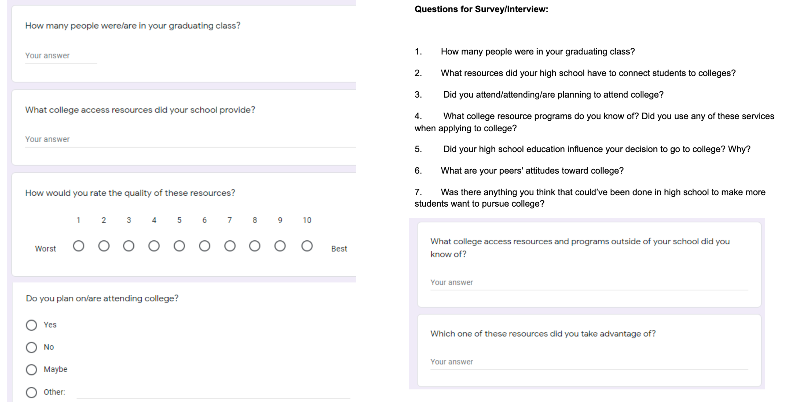
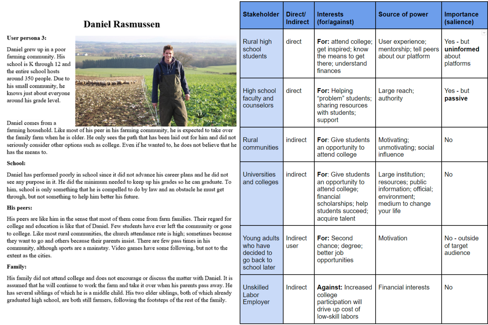
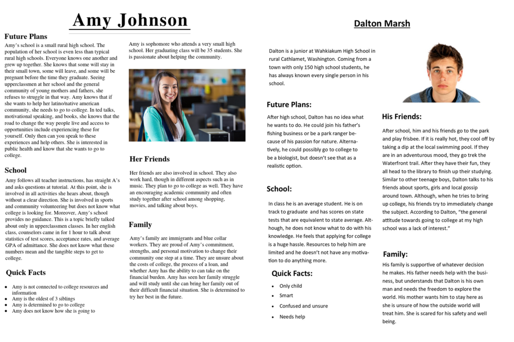
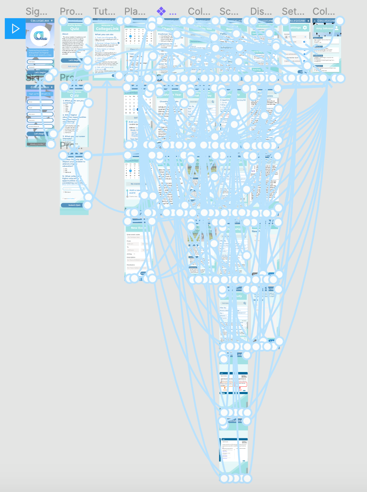
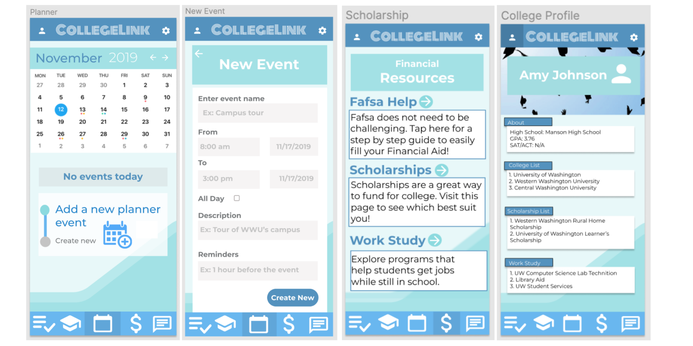
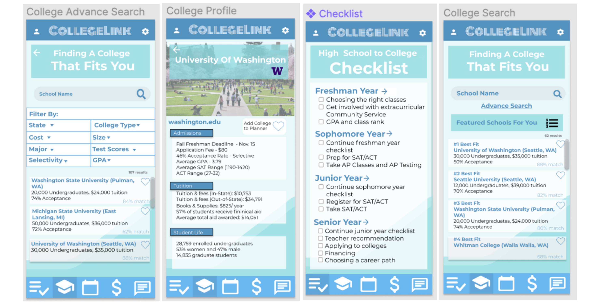

Madison Colvin
Mobile App Design
CollegeLink
Overview
In my INFO 200 course, I worked with a team to design a high-fidelity prototype of an app designed to help connect rural students to higher education opportunities. Rural students often lack the funding and support to attend higher education institutions, by creating this app our team hoped to bridge that gap. Our target audience for this project was current high school students who needed tangible, easy to access resources, and a source of inspiration for their journey towards secondary education.
User Research
To start the project, we conducted online surveys and interviews to gather data from rural high school students and graduates to determine their needs. Most interviewees claimed that the process of applying to college was “confusing” and survey results showed that most students hadn’t given college much thought before their junior or senior year of high school.
Sample Survey Questions
Target Demographic
To supplement our data collected during surveys and interviews, we also conducted additional research online and through the UW library. Using this newfound information paired with our previous findings, we identified our proposed app’s stakeholders and constructed user personas for our target user base.
Stakeholders & User Personas
 Prototype & Design
From the information we collected, we brainstormed what the best possible solution would look like and this took shape in the form of an app. The main goal of the app was to create one cohesive space that contained all the information students would need to apply to college. This included everything from keeping track of application statuses, to scholarships the student qualifies for, and to college campus tours. Throughout the course of the quarter we brainstormed the app, designed a low-fidelity prototype, and made sure that our design catered our target user base’s needs. Our final deliverable was a high-fidelity prototype of the app: CollegeLink. The prototype simulated what the user would see when entering the app, and was fully interactive to give the user a better idea of what the full-fledged app would look like.
Interactions

We designed the app to be personalized to each individual through a profile builder quiz at the beginning of the user’s first time entering the app. The app will ask questions such as “What higher education opportunities have you been considering?”, and “What grade are you currently in?”, to gauge the users wants and needs. Based upon this information, it will generate a personalized calendar with events specific to each user, relevant scholarships, college options, and will provide you with a college “to-do” list. As applying to college can be very confusing and there are often lots of steps involved, user’s need one single place to keep track of information. CollegeLink allows you to store all the information you need in one place, and helps you set up a schedule to keep track of all your due dates and events.
Login & Profile Builder Quiz

Calendar & Resources
College Search & Checklist

For me, this was a great first experience designing a user interface and going through the design process. Coming from a rural community this was an issue that was meaningful and personal to me. I was able to get my hands on all aspects of the design process, everything from logo design, to implementing qualitative research, to learning how to prototype. It was a very positive experience and furthered my understanding of the design process.